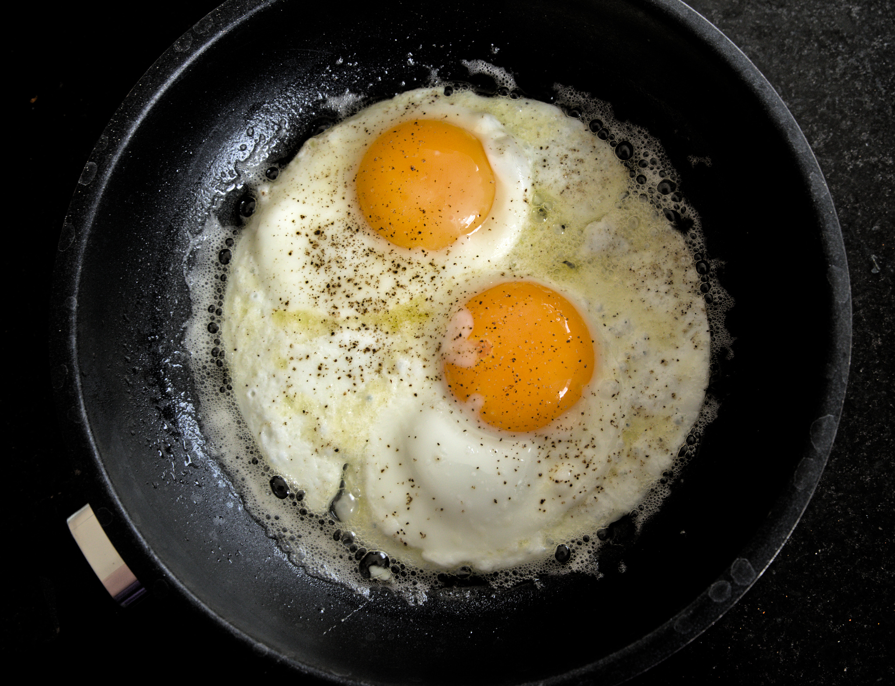

Fried eggs

Description
Fried eggs is an ultimate dinner for singles who don't care how things look like, but rather how they taste like, not to mention how nutritious it is.
Prep Time: 0 mins
Cook Time: 15 mins
Additional Time: 0 mins
Total Time: 15 min
Servings: 1
Fried eggs require so little ingredients that it should be illegal to call it a dish.
Ingredients
- 2-3 eggs
- bit of high smoke-point cooking oil
- A pinch of salt
- A pinch of black pepper
Steps
Follow these steps to prepare your fried eggs
- Gather all the ingredients
- Heat the metal pan so hot that when you drop water on it, bubles form immediately and they gather together (Leidenfrost effect)
- Clear the pan from water and spill some oil on it. Spread the oil to the pan
- Crack your eggs onto the pan and don't touch them
- Adjust the heat so that pan stays hot enough, but eggs doesn't burn
- Sprinkle some salt and black pepper on the eggs
- When the egg white seems to be cooked enough on the top and egg yolk is still runny enough, remove the eggs
- Enjoy your eggs as such or with bread for example
Home